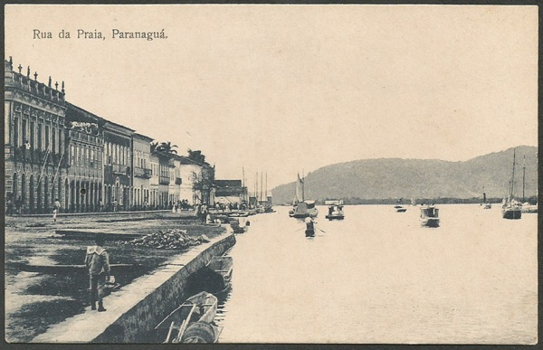
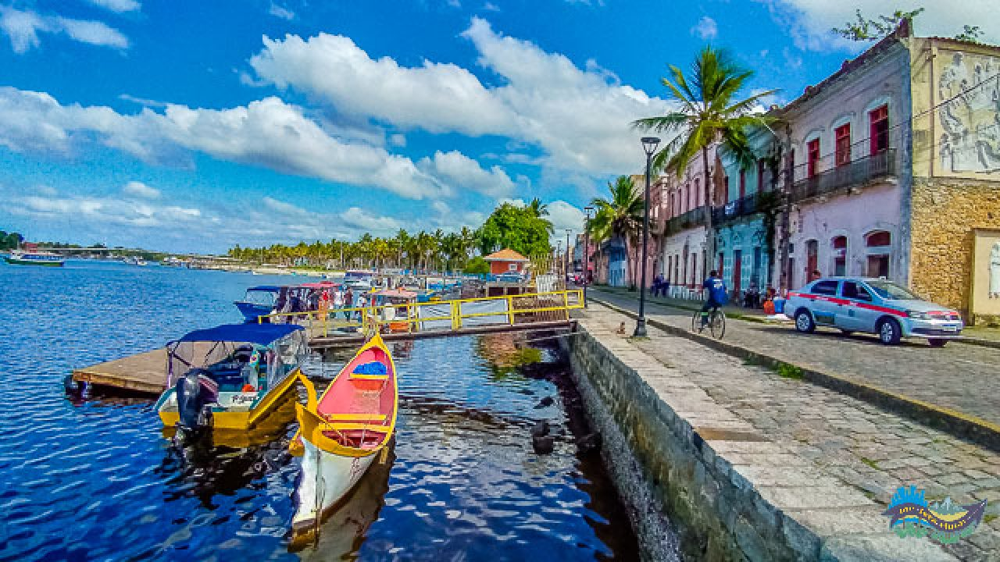

|  | Paranaguá é a cidade mais antiga do estado do Paraná, fundada em 1648. Seu nome tem origem tupi e significa algo como "enseada do mar". O povoamento começou por volta de 1550, na ilha da Cotinga, impulsionado pela busca de ouro. A região foi explorada por vicentinos e cananeenses, que estabeleceram relações comerciais com os indígenas Carijó. Em 1660, Paranaguá tornou-se capitania e, em 1842, foi elevada à condição de cidade. Hoje, é um importante centro histórico e econômico, com destaque para seu porto, um dos principais do Brasil.
|  |